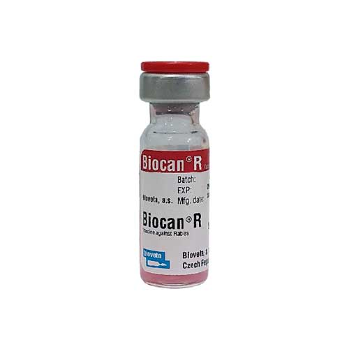

واکسن غیر فعال شده علیه بیماری هاری
📝ترکیب واکسن:
1 میلی لیتر Virus rabiei inactivatum, strain SAD Vnukovo-32 - min.2 IU
📝شرکت سازنده:
کمپانی بیووتا ، جمهوری چک
📝خواص داروشناسی:
بعد از تزریق درون بدن حیوان هدف ، آنتی ژن موجود در واکسن به عنوان یک عامل خارجی شناسایی شده و باعث فعال شدن شماری از مکانیسم های دفاعی (ماکروفاژ، اپسینین ها، اینتر لسین ها و لمفوسیت ها) می گردد.
مجموعه مکانیسم های فعال شده از ابتلا به بیماری در صورت مواجهه با آن جلوگیری می کند. ایمنی از 14 روز پس از واکسیناسیون آغاز می گردد.
📝حیوان هدف:
سگ، گربه، اسب، شتر، گوسفند، گاو، خوک و بز
📝شرایط نگهداری
در محیط خشک و خنک در درجه حرارت 8-2 درجه سانتیگراد نگهداری شود
در صورت عدم نگهداری در شرایط فوق، كیفیت واكسن تضمین نمیگردد
📝روش تجویز و دز:
دوز 1 میلی لیتر بدون توجه به سن، وزن و نژاد است.
📝عمر قفسه ای:
24 ماه پس از تولید
7 روز پس از باز کردن
📝طریقه مصرف:
به صورت زیر جلدی S.C و یا تزریق عضلانی S.M از 3 ماهگی
📝نکته
🔹ایمنی بعد از 14 روز شروع می گردد.
🔹حیواناتی که قبل از 3 ماهگی واکسینه شده باشند بایستی مجددا در سن واکسیناسیون یک دوز دیگر دریافت کنند ولی می بایستی حداقل فاصله 14 روز رعایت شود.
🔹حیواناتی که در دوره 3 تا 12 ماهگی واکسینه شده باشند بایستی دوز بعدی را یک سال بعد دریافت کنند.
📝موارد منع مصرف:
در کلیه بیماری های تب زا
در حیواناتی که توسط حیوانات مبتلا به هاری دچار گاز گرفتگی و یا جراحت شده اند.
📝نام شرکت وارد کننده:
شرکت هزار طب تهران